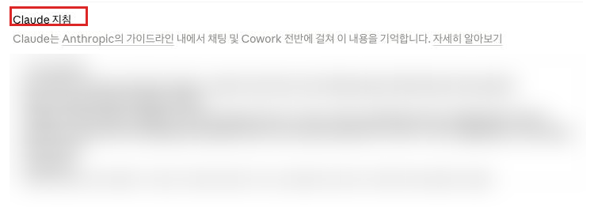

Claude · 중급 · 모듈 01
매 대화마다 "나는 어떤 일을 하고, 이렇게 답해 달라"를 다시 적고 있다면 그것을 한 번만 설정하면 됩니다. 지침을 적용하기 전과 후의 응답을 직접 비교해 효과를 확인합니다.
이 모듈을 마치면 다음을 할 수 있습니다.
| 항목 | 내용 |
|---|---|
| 필요 플랜 | Pro 또는 Max. |
| 설치 | 불필요. 웹 브라우저만 있으면 됩니다. |
| 사전 지식 | Claude 초급 5개 모듈 전부 수료. 특히 초급 01의 프롬프트 3요소를 지침 작성에 그대로 씁니다. |
| 준비물 | 1단계와 6단계의 응답을 비교할 메모장. 두 응답을 나란히 붙여 두면 차이가 잘 보입니다. |
| 예상 사용량 | 프롬프트 4회. 짧은 문서 작성 요청이라 사용량이 적습니다. |
초급과 같습니다. 화면 속 위치를 기준으로 설명하고, 한국어 표기가 공식 문서로 확인된 경우에만 따옴표로 인용합니다.
| 이 문서에서 부르는 이름 | 확인 상태 |
|---|---|
| 왼쪽 아래 이니셜 | 확인됨 (출처: support.claude.com/en/articles/10185728, 2026-08-26 확인 — 라이브 화면에서도 재확인) |
| "설정" | 확인됨 (출처: support.claude.com/en/articles/10185728, 2026-08-26 확인 — 라이브 화면의 드롭다운 메뉴에 동일하게 표시됨) |
| 계정 전체 지침 입력란 영문 원표기: Instructions for Claude | 확인됨 — 한국어 라벨은 "Claude 지침" (2026-08-26, claude.ai 설정 화면에서 직접 확인) |
여기서 설정하는 지침은 이 계정의 모든 대화에 적용됩니다. 실습이 끝난 뒤에도 그대로 두어도 괜찮은 내용만 넣으세요. 되돌리려면 같은 화면에서 지우면 됩니다.
이미 지침을 쓰고 있다면 실습 전에 그 내용을 메모장에 복사해 두세요. 실습 후 원래대로 되돌릴 수 있습니다.
매번 다시 설명하고 있는 것이 있다면, 그건 지침에 적을 것입니다. 초급에서는 프롬프트 하나하나에 맥락을 적었습니다. 중급의 첫걸음은 매번 같은 맥락을 한 번만 적어 두는 것입니다.
공식 문서는 개인화 방법을 셋으로 정리합니다. (출처: support.claude.com/en/articles/10185728, 2026-08-26 확인)
| 수단 | 적용 범위 | 언제 로드되는가 | 이 커리큘럼에서 |
|---|---|---|---|
| 계정 전체 지침 | 내 모든 대화(Cowork 작업 포함) | 항상 | 이 모듈 |
| 프로젝트 지침 | 그 프로젝트 안 대화만 | 그 프로젝트에서 항상 | 모듈 03 |
| 스킬(Skills) | Claude 전체 | 관련 있을 때만 동적으로 | 모듈 02 |
설정 화면의 지침 입력란 위에는 "채팅 및 Cowork 전반에 걸쳐 이 내용을 기억합니다"라는 설명이 붙어 있어, 계정 전체 지침이 Cowork 작업에도 적용됨을 확인할 수 있습니다. (2026-08-26, claude.ai 설정 화면에서 직접 확인)
예전 자료에는 응답 어조를 바꾸는 Styles가 나옵니다. 현재 공식 개인화 문서에는 Styles가 별도로 등장하지 않으며, 어조·형식을 조정하고 내 글쓰기나 선호에 맞춘 소통 방식을 적용하는 기능은 스킬(Skills) 설명에 포함되어 있습니다. (출처: support.claude.com/en/articles/10185728, 2026-08-26 확인) 설정 화면에서도 별도의 Styles 항목은 보이지 않고, "기능" 탭 하단에는 "스킬이 Customize로 이동했습니다"라는 안내만 있습니다 (2026-08-26, claude.ai 설정 화면에서 직접 확인). 이 커리큘럼은 모듈 02에서 스킬로 다룹니다.
공식 문서가 제시하는 네 가지입니다. (출처: support.claude.com/en/articles/10185728, 2026-08-26 확인)
| 관점 | 무엇을 적는가 | 예 |
|---|---|---|
| 선호하는 접근법·방법 | 일할 때 늘 따르는 방식 | "결론을 첫 줄에 먼저 쓴다" |
| 자주 쓰는 용어·개념 | 내 분야에서 특정한 뜻으로 쓰는 말 | "초안은 검토 전 문서, 확정본은 승인이 끝난 문서" |
| 자주 마주치는 상황 | 반복되는 업무 맥락 | "읽는 사람은 대부분 해당 분야 비전문가" |
| 일반적인 소통 방식 | 어조·분량·형식의 기본값 | "목록은 5개 이하로" |
초급 01에서 배운 과제·맥락·출력 형식 중, 맥락과 출력 형식은 매번 같습니다. 그래서 지침으로 옮길 수 있습니다. 매번 달라지는 것은 과제뿐이고, 그것만 프롬프트에 적으면 됩니다.
계정 지침은 모든 대화에 실립니다. 길수록 매 대화의 컨텍스트를 더 차지하고, 관계없는 대화에까지 영향을 줍니다. 특정 작업에만 필요한 규칙은 지침이 아니라 프로젝트나 스킬로 보내야 합니다.
| 이런 내용이면 | 어디에 |
|---|---|
| 내가 하는 일과 늘 지키는 소통 방식 | 계정 지침 (이 모듈) |
| 특정 업무의 배경 자료와 그 업무만의 규칙 | 프로젝트 (모듈 03) |
| 여러 단계로 이뤄진 반복 절차 | 스킬 (모듈 02) |
계정 지침은 모든 대화에 자동으로 실리는 텍스트입니다. 고객명, 계정 정보, 자격 증명, 대외비 프로젝트명 같은 것을 여기 적으면 의도치 않은 대화에도 그대로 들어갑니다. 대화를 공유하거나 캡처할 때도 함께 노출됩니다.
지침에는 업무 방식을 적고, 업무 내용은 그때그때 프롬프트나 프로젝트에 넣으세요.
Team·Enterprise 계정이라면 관리자가 배포한 조직 지침이 내 지침과 함께 적용될 수 있습니다. 충돌하는 부분은 조직 지침이 우선하고, 조직 지침이 다루지 않는 부분은 내 지침이 그대로 적용됩니다. 조직 지침의 설정과 배포는 Admin·Owner 이상의 관리자 권한이 필요해 상급 트랙에서 다룹니다. (출처: support.claude.com/en/articles/14546867, 2026-08-26 확인)
만들 결과물: 적용 효과를 직접 확인한 계정 전체 지침 1건과, 전·후 응답 비교 기록.
새 대화를 열고 프롬프트 A를 그대로 보냅니다. 응답 전체를 메모장에 복사해 두세요. 6단계에서 같은 질문을 다시 하고 비교합니다.
비교 대상이 없으면 지침이 실제로 효과가 있었는지 확인할 방법이 없습니다. 이 모듈에서 가장 중요한 단계입니다.
왼쪽 아래 이니셜을 클릭하고 "설정"을 선택합니다. 초급 01에서 사용량을 확인할 때 들어갔던 그 화면입니다.
설정을 열면 기본으로 "일반" 탭이 열리고, 그 안에 "Claude 지침"이라는 제목의 입력란이 바로 보입니다(영문 원표기: Instructions for Claude). 별도로 다른 탭을 찾을 필요가 없습니다. 입력란 위에는 이 내용을 채팅과 Cowork 전반에서 기억한다는 설명이 붙어 있습니다.
이 캡처로 3-2 표의 한국어 라벨을 "Claude 지침"으로 확정했습니다(2026-08-26 라이브 확인).

6번 절의 지침 전문을 복사해 입력란에 붙여 넣습니다. 네 가지 관점(4-3)이 모두 들어 있는 예시입니다.
본인 업무에 맞게 고쳐도 됩니다. 다만 4-5의 민감 정보 금지는 반드시 지키세요.
이 입력란 주변에는 "저장" 버튼이 보이지 않습니다(2026-08-26 라이브 확인). 정확히 언제·어떻게 자동으로 반영되는지는 공식 문서에 나와 있지 않아 공식 자료 미확인입니다. 입력을 마쳤으면 설정 창을 닫았다가 다시 열어 내용이 그대로 남아 있는지 직접 확인하세요.
1단계에서 쓰던 대화를 이어 쓰지 말고 새 대화를 여세요. 같은 대화를 이어 쓰면 그동안 쌓인 대화 맥락 때문에 응답이 달라져도 그것이 지침 때문인지 맥락 때문인지 구분할 수 없어, 비교 자체가 무의미해집니다.
지침이 새 대화부터만 적용되는지, 저장 즉시 기존 대화에도 적용되는지는 공식 문서에 명시돼 있지 않아 공식 자료 미확인입니다. 다만 어느 쪽이든 새 대화를 쓰는 것이 더 안전한 비교 방법이므로, 이 실습에서는 항상 새 대화를 기준으로 합니다.
1단계와 완전히 동일한 프롬프트 A를 다시 보냅니다. 한 글자도 바꾸지 마세요. 프롬프트가 같아야 차이가 지침 때문이라고 말할 수 있습니다.
여기에 결론이 먼저 오는 응답 첫 줄이 표시됩니다
[C-02] 같은 프롬프트인데 응답 구조가 달라졌다 — 지침이 적용된 결과를 근사한 목업입니다.
실제 화면과 다를 수 있는 근사 목업입니다. 이 계정에는 이미 저장된 실사용 지침이 있어, 이 화면을 실제로 찍으려면 그 지침을 6번 절 예시 문구로 덮어써야 합니다 — 계정 소유자 승인 없이는 할 수 없는 일이라 실촬영 대신 목업으로 대체했습니다. 학습자 본인 계정에서는 5~6단계를 그대로 따라 하면 이 화면을 직접 만들 수 있습니다.
메모장의 1단계 응답과 방금 받은 응답을 나란히 놓고 확인합니다.
| 확인 항목 | 지침 전 | 지침 후 |
|---|---|---|
| 첫 줄이 결론인가 | 대개 아님 | 결론이어야 함 |
| 목록 항목 수 | 정해지지 않음 | 5개 이하여야 함 |
| 불확실한 내용 표기 | 없음 | "확인 필요" 표시가 있어야 함 |
차이가 없다면 ① 새 대화가 아닌 기존 대화에서 물었거나 ② 지침이 저장되지 않았을 수 있습니다. 7번 절을 확인하고 5단계부터 다시 하세요.
지침은 짧을수록 좋습니다(4-4). Claude에게 직접 점검을 맡깁니다.
제 계정 지침을 점검해 주세요.
아래 기준으로 나눠 주세요.
1. 모든 대화에 필요한 것 — 계정 지침에 남길 것
2. 특정 업무에만 필요한 것 — 프로젝트나 스킬로 옮길 것
3. 민감 정보이거나 불필요한 것 — 지울 것
지침 내용은 아래와 같습니다.
(4단계에서 저장한 지침을 여기 붙여 넣으세요)2번으로 분류된 항목이 있으면 지침에서 빼 두었다가 모듈 02·03에서 제자리를 찾아 넣습니다.
4-4의 판단 기준을 내 업무에 적용해 봅니다. 이 응답이 모듈 02·03의 실습 재료가 됩니다.
제가 Claude에게 반복적으로 맡기는 일이 아래와 같습니다.
(본인 업무 3~4가지를 적으세요)
각각을 계정 지침 / 프로젝트 / 스킬 중 어디에 두는 것이 좋을지
판단해 주고, 그 이유를 한 줄씩 적어 주세요.응답을 메모해 두세요. 모듈 02에서 스킬로, 모듈 03에서 프로젝트로 만들 후보 목록이 됩니다.
사전 준비물: 설정 화면의 계정 전체 지침 입력란. 기존 지침이 있으면 메모장에 백업.
[내 상황]
- 사내 업무 문서를 자주 작성합니다.
- 읽는 사람은 대부분 해당 분야 비전문가입니다.
[자주 쓰는 용어]
- "초안"은 검토 전 문서, "확정본"은 승인이 끝난 문서를 뜻합니다.
[답변 방식]
- 결론을 첫 줄에 먼저 쓰세요.
- 목록은 5개 이하로 유지하세요.
- 확실하지 않은 내용은 "확인 필요"로 표시하고 추측으로 채우지 마세요.네 가지 관점이 이렇게 대응합니다:
| 관점 (4-3) | 위 지침의 어느 줄 |
|---|---|
| 자주 마주치는 상황 | [내 상황] 두 줄 |
| 자주 쓰는 용어·개념 | [자주 쓰는 용어] |
| 선호하는 접근법·방법 | "결론을 첫 줄에 먼저" |
| 일반적인 소통 방식 | "목록은 5개 이하", "확인 필요 표시" |
예상 출력: 저장만 하므로 출력이 없습니다.
성공 확인 방법: 저장 후 새 대화를 열어 프롬프트 A를 보냈을 때 응답의 첫 줄이 결론이면 성공입니다.
4-5에서 본 대로 이 텍스트는 모든 대화에 자동으로 실립니다. 위 예시에 업무 내용이 아니라 업무 방식만 적혀 있는 것을 확인하세요.
아래 "예상 출력"은 응답 예시입니다. 성공 여부는 문구가 아니라 응답의 구조가 지침대로 바뀌었는지로 판단합니다.
사전 준비물: 1단계에서는 지침 없는 새 대화, 6단계에서는 지침 저장 후의 새 대화. 두 번 모두 같은 문장을 씁니다.
사내 회의실 예약 규칙이 자주 바뀌어서 직원들이 헷갈려 합니다.
전 직원에게 보낼 안내문 초안을 써 주세요.예상 출력(응답 예시): 지침 전에는 배경 설명부터 시작해 항목이 여럿인 안내문이 나오는 경우가 많습니다. 지침 후에는 결론이 첫 줄에 오고, 목록이 5개 이하로 정리되며, 규칙 내용 중 알 수 없는 부분이 "확인 필요"로 표시됩니다.
성공 확인 방법: 아래 3가지를 두 응답을 비교해 확인합니다.
세 번째 항목이 특히 중요합니다. 회의실 규칙의 실제 내용을 알려 주지 않았는데도 그럴듯하게 지어냈다면, 지침이 적용되지 않았거나 지침 문구가 약한 것입니다.
사전 준비물: 4단계에서 저장한 지침 내용.
제 계정 지침을 점검해 주세요.
아래 기준으로 나눠 주세요.
1. 모든 대화에 필요한 것 — 계정 지침에 남길 것
2. 특정 업무에만 필요한 것 — 프로젝트나 스킬로 옮길 것
3. 민감 정보이거나 불필요한 것 — 지울 것
지침 내용은 아래와 같습니다.
(4단계에서 저장한 지침을 여기 붙여 넣으세요)예상 출력(응답 예시): 세 분류로 나뉜 목록이 나옵니다. 예시 지침을 그대로 썼다면 대부분 1번으로 분류되는 것이 정상입니다.
성공 확인 방법: 세 분류가 모두 제시되면 성공입니다(해당 없는 분류는 "없음"). 본인 지침으로 바꿔 썼다면 2번 분류에 들어간 항목을 메모해 두세요.
사전 준비물: 본인이 Claude에게 반복적으로 맡기는 일 3~4가지.
제가 Claude에게 반복적으로 맡기는 일이 아래와 같습니다.
(본인 업무 3~4가지를 적으세요)
각각을 계정 지침 / 프로젝트 / 스킬 중 어디에 두는 것이 좋을지
판단해 주고, 그 이유를 한 줄씩 적어 주세요.예상 출력(응답 예시): 업무마다 셋 중 하나가 배정되고 이유가 붙습니다.
성공 확인 방법: 업무마다 배정과 이유가 모두 나왔으면 성공입니다. 이 응답을 저장해 두세요 — 모듈 02(스킬)와 모듈 03(프로젝트)의 실습 재료가 됩니다.
| 증상 | 원인 | 해결 |
|---|---|---|
| 지침을 저장했는데 응답이 그대로다 | 기존 대화에서 물어봤거나, 입력 후 저장(반영)이 실제로 안 됐음 | 새 대화를 열고 다시 확인하세요(5단계) — 같은 대화를 이어 쓰면 맥락이 섞여 비교가 정확하지 않습니다. 그래도 그대로라면 설정을 닫았다가 다시 열어 지침이 남아 있는지 확인하세요. |
| 설정에서 지침 입력란을 못 찾겠다 | 화면 언어나 레이아웃 차이 | 설정을 열면 기본으로 열리는 "일반" 탭에서 "Claude 지침"이라는 제목의 입력란을 찾습니다. 프로젝트 안에서 여는 지침 입력란과 다른 화면이니 주의하세요. |
| 지침 일부만 반영된다 | 지시가 모호하거나 서로 충돌함 | 검증 가능하게 고쳐 씁니다. "간결하게"가 아니라 "목록은 5개 이하로"처럼 숫자와 형식으로 적으세요. |
| 관계없는 대화에까지 지침이 끼어든다 | 특정 업무용 규칙을 계정 지침에 넣음 | 8단계의 점검을 실행해 2번으로 분류된 항목을 지침에서 빼고, 모듈 02·03에서 제자리에 넣습니다. |
| Team·Enterprise인데 내 지침과 다른 규칙이 적용된다 | 관리자가 배포한 조직 지침이 함께 적용됨 | 정상 동작입니다. 조직 지침은 관리자만 바꿀 수 있습니다. 충돌이 업무에 지장을 주면 관리자에게 문의하세요. |
오류가 나지 않아 위 표로는 잡히지 않지만, 그대로 두면 지침이 오히려 방해가 되는 경우입니다.
| 습관 | 겉으로 나타나는 모습 | 대응 |
|---|---|---|
| 지침을 계속 덧붙이기만 한다 | 처음엔 좋아지다가, 어느 순간부터 지시가 서로 부딪혀 무엇이 먹는지 알 수 없어짐 | 추가할 때마다 뺄 것도 함께 찾습니다. 8단계의 점검을 주기적으로 돌리세요. |
| 특정 업무 규칙을 계정 지침에 넣는다 | 그 업무는 편해지지만, 관계없는 대화에서 엉뚱한 형식이 나옴 | 4-4의 표로 판단합니다. 업무별 규칙은 프로젝트, 반복 절차는 스킬입니다. |
| 설정하고 효과를 확인하지 않는다 | 적었으니 됐다고 생각하지만, 실제로는 모호해서 무시되는 중 | 전·후 비교(1·6·7단계)를 한 세트로 굳힙니다. 이 모듈의 실습 구조가 그 훈련입니다. |
| 업무 내용을 지침에 적는다 | 매번 안 적어도 되어 편함. 대화를 공유하거나 캡처할 때 그대로 노출됨 | 지침에는 업무 방식만, 업무 내용은 프로젝트에 둡니다(4-5). |
모듈 02로 넘어가기 전에 스스로 확인하세요.
이 모듈에는 캡처 2장이 필요합니다. C-01은 2026-08-26 라이브 확인 과정에서 실제 화면으로 교체했습니다. C-02는 계정에 이미 저장된 실사용 지침을 보존하기 위해 실촬영 대신 HTML/CSS 목업으로 대체했습니다(사유는 아래 콜아웃 참고).
| 번호 | 화면 | 진입 경로 | 캡처 범위 | 강조 표시 | 캡션 | 상태 |
|---|---|---|---|---|---|---|
| C-01 | 설정 > 일반 탭의 "Claude 지침" 입력란 | 왼쪽 아래 이니셜 → "설정" → "Claude 지침" 입력란 | 입력란과 위의 설명 문구 | 입력란 라벨 | "Claude 지침" 입력란. 여기 적은 내용은 이 계정의 모든 대화와 Cowork 작업에 적용된다. | 완료 |
| C-02 | 지침 적용 후 응답 | 지침 저장 후 새 대화에서 프롬프트 A 전송 | 응답 앞부분(첫 줄과 목록) | 결론이 먼저 나온 첫 줄 | 같은 프롬프트인데 응답 구조가 달라졌다. | 목업 대체 |
C-02는 이 계정에 실제로 새 지침을 저장한 뒤라야 찍을 수 있는 화면입니다. 이 계정에는 이미 실사용 중인 지침이 저장돼 있어, 확인 작업 중에 그 내용을 6번 절의 예시로 덮어쓰면 실제 사용자의 설정을 훼손하게 됩니다. 계정 설정을 바꾸는 작업은 계정 소유자의 명시적 승인 없이는 진행하지 않아, 이 자리에는 HTML/CSS로 근사 재현한 목업을 대신 넣었습니다(실제 화면과 다를 수 있음, §7-3 참고). 학습자 본인 계정에서 5~6단계를 그대로 따라 하면 이 화면을 직접 만들 수 있고, 계정 소유자가 승인하면 이 목업을 실제 캡처로 교체할 예정입니다.
https://support.claude.com/en/articles/10185728-understanding-claude-s-personalization-features 2026-08-26 확인https://support.claude.com/en/articles/14546867-set-organization-instructions 2026-08-26 확인https://claude.com/pricing 2026-08-26 확인계정 전체 지침의 진입 경로와 적용 범위, 무엇을 적을지에 대한 네 가지 관점, 계정 지침·프로젝트 지침·스킬의 역할 구분을 공식 개인화 문서로 확인했습니다. 조직 지침이 Team·Enterprise의 Admin·Owner 이상 전용이라는 점, 개인 지침과 함께 적용되며 충돌 시 조직 지침이 우선한다는 점은 조직 지침 문서로 확인했습니다. 한국어 화면의 지침 입력란 라벨은 2026-08-26 Team 계정 라이브 확인으로 "Claude 지침"임을 확정했고, 같은 확인에서 Team 계정에도 이 입력란이 동일하게 나타나는 것과 별도의 "저장" 버튼이 없다는 것도 직접 확인했습니다. 다만 저장이 정확히 언제·어떤 방식으로 반영되는지, 지침이 기존 대화에도 즉시 적용되는지는 공식 문서와 라이브 확인 모두로 확정하지 못해 공식 자료 미확인으로 남겼습니다(5단계 참고). 이 계정에 실사용 중인 지침이 이미 저장돼 있어, C-02(지침 적용 후 응답) 캡처처럼 실제 저장이 필요한 화면은 계정 소유자 승인 없이 만들지 않고 HTML/CSS 목업으로 대체했습니다.